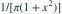
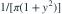
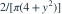
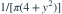
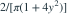
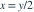

的密度为
的密度为 
，令 。 的密度是？- A

- B

- C

- D

我已思考，展开答案与解析
正确答案：B
- 用反变换

，乘雅可比 ，得到 。
，得到 。
易错提醒先明确分布参数、独立性和统计量的定义，再进行计算。
用户提供练手卷 · 原第 3 题；题目 PDF 第 1 页
单选改编；题干与选项已重新编排
的密度为 
，令 。 的密度是？




，乘雅可比，得到 。用户提供练手卷 · 原第 3 题；题目 PDF 第 1 页
单选改编；题干与选项已重新编排